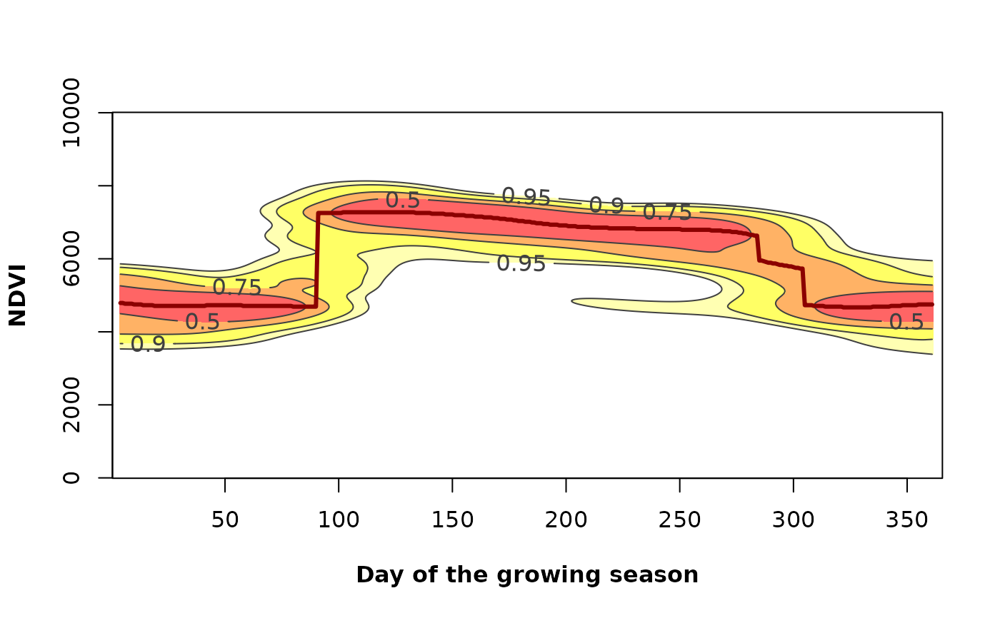

Plot the most probable vegetation greenness values.
Arguments
- x
Numeric vector. A time series of a vegetation index (e.g. LAI, NDVI, EVI) or any other variable with seasonal behavior. The code has been optimized to work with integer values. Please re-scale the input values if necessary (e.g. NDVI ranging from 0.0000 to 1.0000, multiply by 10,000)
- dates
A date vector. The number of dates must be equal to the number of "x" values (numeric input vector).
- h
Numeric. Indicates the geographic hemisphere to define the starting date of the growing season. h = 1 if the vegetation is in the Northern Hemisphere (season starting on January 1st), h = 2 if it is in the Southern Hemisphere (season starting on July 1st)
- xlab
Character vector (or expression) giving plot title in x axis label (e.g. xlab = "day of the growing season")
- ylab
Character vector (or expression) giving plot title in y axis label (e.g. ylab = "NDVI")
- rge
Numeric vector with the minimum and maximum values of the vegetation index (e.g. NDVI) used in the analysis. We suggest the use of theoretically based limits. For example in the case of MODIS NDVI or EVI, it ranges from 0 to 10,000, so rge = c(0,10000)
Details
It is a "heatmap" of the annual phenological variability of the Phen output. It calculates and plot a likelihood map of the vegetation-index–time space using a numeric vector of greenness proxies such as the Normalized Difference Vegetation Index (NDVI) or Enhanced Vegetation Index (EVI). Also a vector with dates for the vegetation index values is required. This function is partially based on the ci2d function on package gplots.
Examples

# \donttest{
library(lubridate)
library(terra)
## Testing raster data from Central Chile (NDVI), h=2##
# Load data
f <- system.file("extdata/MegaDrought_spatRast.rda", package = "npphen")
MegaDrought <- readRDS(f)
# Dates
data("modis_dates")
# Generate a Raster time series from a particular pixel
# using a SpatRaster and a date for Central Chile
md_pixel <- cellFromXY(MegaDrought, cbind(313395, 6356610))
md_pixelts <- as.numeric(MegaDrought[md_pixel])
plot(modis_dates, md_pixelts, type = "l")
# Variability of the annual phenology for the given pixel
PhenKplot(x = md_pixelts, dates = modis_dates,
h = 2, xlab = "DGS", ylab = "NDVI", rge = c(0, 10000))
## Testing with the Bdesert_spatRast from
## the Atacama Desert, Northern Chile (NDVI), h=2 ##
# Load data
# SparRaster
f <- system.file("extdata/Bdesert_spatRast.rda", package = "npphen")
Bdesert <- readRDS(f)
# Generate a Raster time series from a particular pixel
# using a SpatRaster and a date for Northern Chile
bd_pixel <- cellFromXY(Bdesert, cbind(286638, 6852107))
bd_pixelts <- as.numeric(Bdesert[bd_pixel])
plot(modis_dates, bd_pixelts, type = "l")
# Variability of the annual phenology for the given pixel
PhenKplot(x = bd_pixelts, dates = modis_dates,
h = 2, xlab = "DGS", ylab = "NDVI", rge = c(0, 10000))
# }